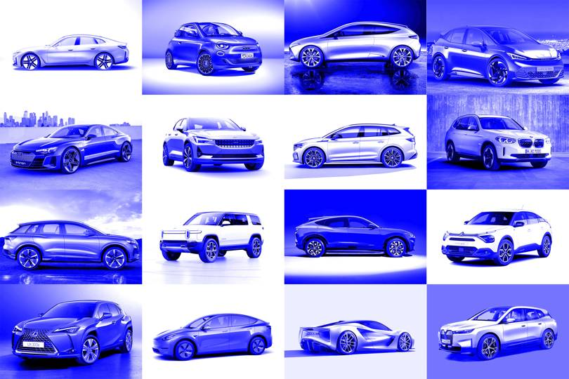

TECHNOLOGIN |
TECHNOLOGIN |
Where The Knowledge Begins
TECHNOLOGIN |Where The Knowledge Begins
In the end of 2020, we had another crushal news about coronavirus that, In UK ,A new variant of the coronavirus is spreading rapidly in England and raising international alarms. This new variant now accounts for more than 60% of the cases in London. And scientists say the variant is likely more contagious than previous versions of the virus.
One lesson we will all take away from 2020: predicting the future is tricky. According to the Astrologist, the year 2021 will be great for the development of new and modern technologies. World will become more modern than few past years
With the UK ban on new petrol cars less than a decade away, the next 12 months are set to be the busiest ever for an industry accelerating towards an electric future. Here's our pick of 2021 EVs from A to V.
1. No Speed Limit on Innovation
Thought developer-first was big? It is just getting started. The world of dev tools, infrastructure and open source software moved faster in 2020, and in 2021 we will only see it accelerate. New projects and categories will gain traction and go mainstream faster than ever before. Bellwether projects that seemed to be gliding along with momentum may become passe. This is a developer’s world now and the speed limits that used to hold back innovation and adoption are gone.
2. The Hottest Technology of 2021
Is it too obvious to say “AI” (again)? We may see trillion-parameter pre-trained NLP models in 2021. One of the things we saw in 2020 was a kind of arms race amongst the big tech companies involved in building in extremely large pre-trained NLP models, such as GPT-3, or Microsoft’s Turing, with hundreds of billions of parameters. The capabilities of these systems have surprised even the deep experts in the field.
3. 5G Network
5G networks are the next big thing in mobile internet connectivity with the speed of 100gbps. After almost a decade of development, it has finally become a reality in some areas. It offers an unprecedented transmission speed that far surpasses its predecessor, 4G. And since we’re talking gigabytes per second transfer rate, 5G is actually faster than virtually any home broadband available.5G can go as much as 100x faster than 4G.
4. Virtual Reality
Virtual Reality (VR) immerses the user into an environment. By stimulating their hearing and vision, it makes them feel as if they are experiencing the simulated environment firsthand. The most popular application of Virtual Reality is on gaming, with PlayStation VR and Facebook’s Oculus leading the market in 2021.
5. ChatBot
Due to the growth of machine learning, chatbots have become extremely popular for small businesses and huge enterprises alike. Combine that with Natural Language Processing (NLP) and we got ourselves a more responsive, more intelligent, and more human conversational agent. Typically, chatbots are used in customer service. It will also become one of the most popular SMB technological trends of 2021.
| Category | Acceptance of AI Chatbots by Service |
|---|---|
| Online Retail | 34 |
| Healthcare | 27 |
| Banking | 20 |
| Financial Advice | 20 |
| Insurance | 15 |
| Car Dealership | 15 |